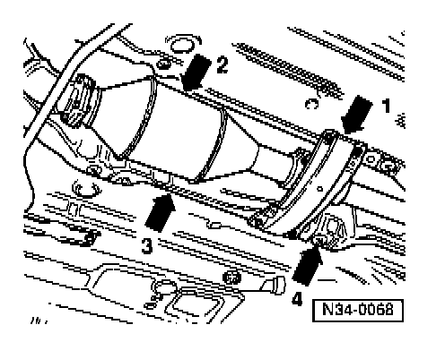
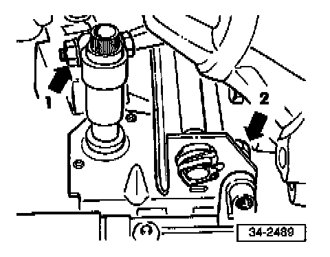
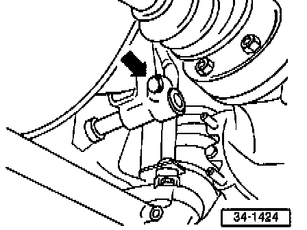
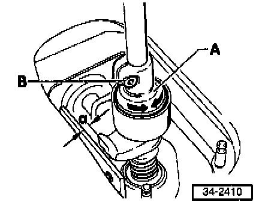
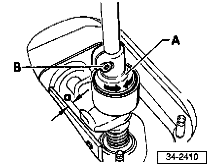
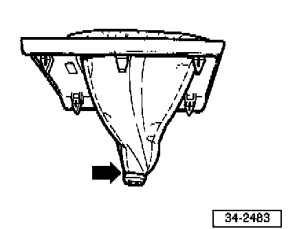

020 Transmission
SELECTOR LEVER AND SELECTOR ROD, REMOVING AND INSTALLING
Removing
- Detach boot from frame.
- Remove shift knob and boot.
- Remove frame from center console.

- Remove nuts securing selector lever housing to center console (arrows).

- Remove front crossmember (arrow 1) from below exhaust system.
- Remove heated oxygen sensor, oxygen sensor behind three way catalytic converter, and three way catalytic converter (arrow -2-).
- Remove front heat shield (arrow -3-).
- Loosen rear heat shield (arrow -4-) in forward area.

- Remove boll from clamp for selector rod/selector lever (arrow -1-), and remove front bolt (arrow -2-) from bracket (mounted on steering gear).

- Remove remaining bolts (arrows) from bracket.
- Disconnect selector lever housing from body.
- Push selector lever housing toward rear, and push selector rod (together with bracket) and selector lever up into engine compartment.
- Remove bracket and selector lever from selector rod.

- Remove nut -A- and bolts -B-.

- Swing selector lever housing (together with selector rod) downward (arrow -1-) while moving assembly toward engine (arrow -2-), and remove
Installing
- Install in reverse order of removal.
Shift Linkage, Adjusting
- Transmission in neutral

- Loosen clamp (arrow).
Joint between selector rod and selector lever must move easily
- Remove shift knob, boot, and frame see "SHIFT BOOT, INSTALLING" below.

- Insert gauge 3104.
Gauge must not jam
- Align selector rod/selector lever (with transmission in neutral) and tighten clamp.
CAUTION: DO NOT put components under stress.
Operation
- Selector lever resting in 3rd/4th-gear plane with transmission in neutral
- Shift through all gears.
They must engage smoothly without hanging up.
Pay particular attention to correct operation of the reverse lockout.
If a gear fails to engage smoothly during repeated shifting:
- Engage 1st gear.
- Remove play from shift linkage by pressing selector lever gently to left at shift knob threads while 1st gear is engaged.

Distance between selector lever and selector lever housing travel stop (dimension -a-) must then be 1-1.5 mm (0.04-0.06 in.)

The final adjustment is carried out by turning the eccentric adjuster -A- as follows:
- Loosen clamping bolt -B-.
- Turn eccentric adjuster until dimension -a- is correct.
- Tighten clamping bolt -B-.
Tightening torque: 2 Nm (18 in lb)
CAUTION: To achieve a satisfactory adjustment:
The selector lever and linkage components must be in good condition.
The shift linkage must operate smoothly without excessive resistance.
The transmission, clutch and clutch release mechanism must be in good condition.
- Install shift boot and shift knob.
SHIFT BOOT, INSTALLING
Rubber Boot
- Snap into shift knob.
Leatherette Boot
- Turn inside of boot toward outside.

- Insert shift knob in boot (arrow).

- Attach shift knob to boot with rubber ring (arrow).
- Install shift knob and boot together.
Installation position: boot is folded in area around shift knob